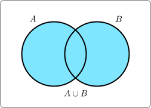
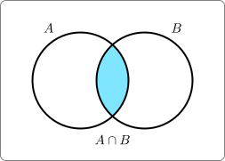
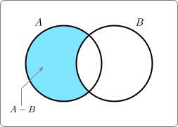
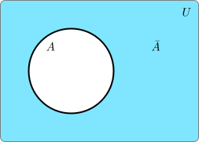

Definition 8.2.1.
Let \(A\) and \(B\) be sets. The union of \(A\) and \(B\text{,}\) denoted \(A \cup B\text{,}\) is the set of all elements in \(A\) or \(B\text{.}\)
\begin{align*}
A \cup B &= \{x \so x\in A \text{ or } x \in B \}
\end{align*}



